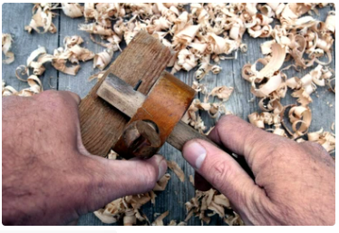
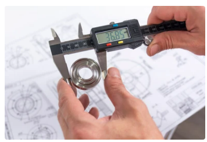

Specialist marking tools
Marking/Cutting/Mortise gauge:
- Used to mark/dent a piece of timber parallel to the edge

Odd leg callipers:
- Used to mark a line on an edge/step on a peice of metal
Internal callipers:
- Used to measure the internal diameter of a tube/pole
External callipers:
- Used to measure the outsude diameter of a tube/pole
Try-square:
- Used to mark a line 90o to a piece of timber
Engineering square:
- Used to mark a line 90o to a piece of metal
Micrometre:
- Used to measure a small distance/thickness between its tqo faces, one face can be moved to measure different distances
Vernier callipers:
- Used to measure internal/external measurements very orecisely

Densitometer:
- A machine which can be used to measure the optical density of a photographic/semi-transparent material
Dividers:
- Used to mark circles/curves on a piece of metal
Jigs:
- A jig is used to control the motion of a tool
| Advantages | Disadvantages |
|---|---|
|
|
Fixtures:
- Used to support/hold the workpiece in place
| Advantages | Disadvantages |
|---|---|
|
|